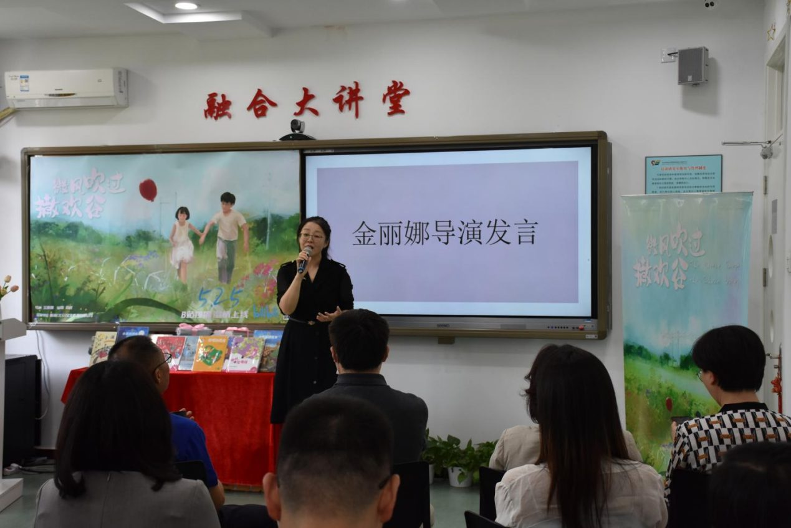
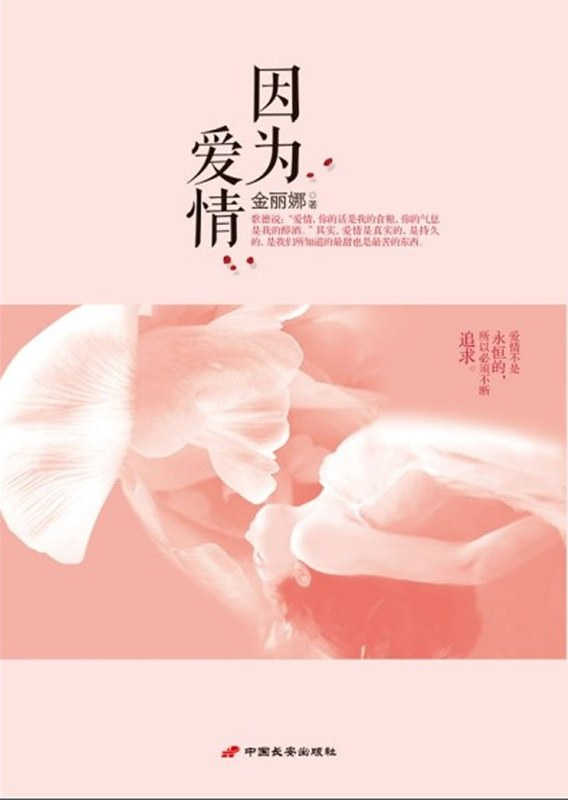

金丽娜
开始放映01人物
2006 年，她从黑龙江电台的直播间走进央视。此后十几年，她把镜头对准集训场、海疆与边关，也把听来的故事，一个个写进了书里。

金丽娜，毕业于中国传媒大学，CCTV-7《军事纪实》纪录片编导、主编。
进入央视之前，她是黑龙江电台情感节目的主持人，温婉知性的声音陪伴了很多夜晚。2006 年进入央视后，她一直在军事报道一线：拍过奥运安保的狙击手集训队，走过海军六十年的海疆，也在零下三十多度的内蒙古边防线上跟着战士巡逻。
她还写书。2013 年出版的散文集《因为爱情》，最后一章叫作“边防线上的爱情”。近年来，她执导了两部教育公益电影，把镜头转向校园和孩子们的心事。
- 2006进入央视
- 17年导演生涯（截至 2023）
- 2次“中国十大纪录片导演”
- 3部出版著作
02身份
一个人，四种讲故事的方式
把鼠标移到卡片上（手机上点一下），看看每一种身份。
03作品
十三部作品，一卷胶片
继续向下滚动，胶片会向左走左右滑动胶片 · 点任意一格看详情
2007
04现场
八千里边防线
2012 年冬，《走边关》摄制组自西向东，沿内蒙古边防线拍摄。往下滚动，跟着他们走一遍；移动鼠标，风会吹动雪。
示意图 · 站点按盟市驻地近似标注 · 据解放军报 2012 年 12 月报道整理
05片场
来，打一板
每打一板，解锁一个她的真实故事。一共 14 个，看你能不能集齐。
0 / 14 已解锁
点一下场记板，开拍
第一板，从 2006 年以前说起。
06文字
稿纸上的爱情

散文集
因为爱情
因为爱情金丽娜 著
按住拖动，转一转这本书
散文集 · 2013 · 中国长安出版社
《因为爱情》
一本记录爱情故事的散文集。以作者十几年的工作经历为背景，写下所见所闻的情感故事——有凄美，有感伤，有温暖，也有一点遗憾。
308 页 · 平装 · ISBN 978-7-5107-0574-8 · 定价 36.00 元
推荐：军旅音乐人小曾、央视军事节目中心专题部主任魏纪奎
07荣誉
被看见的镜头
年份为作品年份 · 点任意一行查看作品
“这是我从事导演工作17年来最深刻的一次拍摄。”
—— 金丽娜，2023 年 5 月，《微风吹过“撒欢谷”》发布会（据央广网报道）
08影像
镜头之外
09出处
资料与图片来源
本页文字与图片整理自以下公开报道，图片版权归原作者所有。作品署名、年份与奖项名称，以本人及权威发布为准。